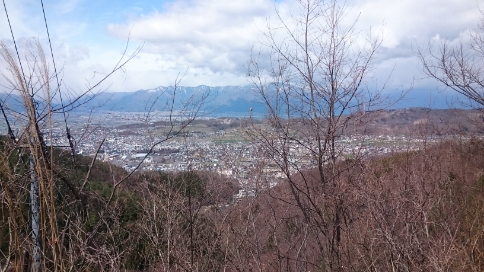
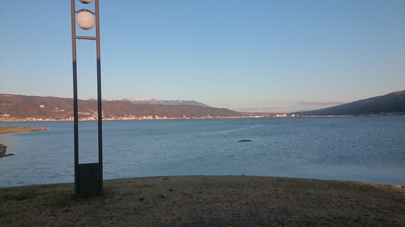

美ヶ原サイクリングページ
サイクリングの経緯について

- ↑松本-美ヶ原-諏訪-松本の経路
＊刈谷→水戸 自転車旅 1日目＊ 豊川→豊橋→(白須賀, 弁天島)→浜松→(金谷, 宇津ノ谷)→静岡→富士→沼津→三島 今回の行程を通して、豊橋→沼津(185km)は12時間で行けることが分かった。 明日は、伊豆半島一周ということで、風光明媚でありながら、アップダウンの激しいその道はまさに長野級ということでいきなり最大の試練が待ち構えているので、心してかかりたいと思います。 ＊刈谷→水戸 自転車旅 2日目＊ 三島→修善寺→戸田→土肥→西伊豆→松崎→南伊豆→下田→(電車)→藤沢 2日目距離 133.03km(自転車, 獲得標高2000mくらい) 刈谷からの距離 370.93km コメント 今回は、三島から出発し、1度136号にて伊豆の国(韮山反射炉は工事中だった)、伊豆市街を散策した後、修善寺、戸田峠を通ることで、伊豆半島の外周を周り始めた。 天城越えをして、浄蓮(じょうれん)の滝、河津七滝(ななだる)を見ながら下田まで抜け、東伊豆を回るか迷ったが、あくまで1周にこだわった結果、1日では下田までしかたどり着かなかった。 後の行程もあるため、伊豆急行、伊東線、東海道線を利用し藤沢へ。 明日は、藤沢→鎌倉→横須賀 久里浜→金谷(東京湾フェリー) 富津→館山→南房総→鴨川→勝浦→いすみ→茂原(190km)の予定。 伊豆とは違って平坦なので、距離稼げるはず。 ＊刈谷→水戸 自転車旅 3日目＊ 藤沢→逗子→横須賀→浦賀→久里浜 31.88km 740→950 久里浜港→(東京湾フェリー)→金谷港 1020→1100 浜金谷→鋸南→館山→鴨川→勝浦→御宿→いすみ→一宮→茂原 1130→2110 126.68km 計 158.56km 刈谷から529.5km コメント ついに、人生初の千葉(ディスニー除く)及びフェリーを体感することができた。今回は、金谷港から房総半島に上陸した。その後館山、千倉(チーバ君の足)もしっかりと回る予定で臨んだが、後に船も電車も運休となるほどの強風に見舞われ、回る余裕がなかった(洲崎、野島崎灯台逃した)点が心残りではある。とはいえ未開の地に足を踏み入れる楽しさと旅情を存分に味わっているのもまた事実である。 明日は銚子を経由し、茨城の鹿嶋か大洗、水戸まで行ってしまおうと考えているところであるが、九十九里浜沿いから行くか東金側から行くかで迷っている。また、もしかしたら、佐原、成田、霞ヶ浦あたりへと訪れるかもしれない。 ＊刈谷→水戸→(いわき) 自転車旅 4日目＊ 茂原→九十九里→山武→匝瑳→旭→銚子→香取→佐原→つくば 730→2310 計 190.37km 刈谷から728.67km コメント 今日は、茂原を出て東に行き、九十九里浜沿いに銚子を目指し、それから佐原を経由し、つくばが最終地となった。銚子に関しては、犬吠埼や銚子電鉄を目当てとしていたが、銚子電鉄は、発車時刻が合わず乗ることができなかったので、また次回に乗りたいところだ。佐原では古い町並みを楽しんだが、その後人生初の茨城へと上陸した。もともとは、石岡まで行く予定だったが、明日の1日は大洗・水戸だけでなく、土浦、つくばも観光したいという訳で、つくばにて1泊することとなった。 ＊刈谷→水戸→(いわき?) 自転車旅 5日目＊ 3.18 つくば→土浦→かすみがうら→石岡→水戸→大洗 91.97km 刈谷から813.18km 今回は、つくば、土浦、水戸、大洗を観光した。つくばに関しては、学園都市の街並みを体感し、土浦では霞ヶ浦や観光案内所(蔵)にてその魅力を知った。水戸へはそこから2時間程度で着き、偕楽園や常磐神社を巡ったが、たまたま桜の時期ということもあり、大変華やかかつ美しい景色であった。そうこう回っているうちに、結構時間が経過してしまったため、笠間はあきらめ大洗キャンプ場に泊まることとしたが、大洗もまたすぐには回りきれない程の魅力があるため、明日は本当にいわきへ行くのか迷っている。 数時間前の助けて案件 大洗キャンプ場にて、人懐っこく可愛げのあるネコがおったが、近づいて来たかと思うと、足の上でくつろぎ始めた。離そうとすると、名残惜しそうに長い爪で再び寄ってくるため、構っているうちに大洗の観光時間が減ってしまった。 ちなみに、本日の夕食は、旬が終わるぎりぎりであることと、そこでしか味わえない幻の料理ということで、「あんこう鍋フルコース」を頼んだ。なんと5700円もする料理であり、人生初のコース料理、あんこう鍋、豪華過ぎる外食であることから、涙が出そうなほど素晴らしいものであった。
3.13 刈谷→豊川 40.42km 3.14 豊川→三島 915→2251 13時間38分08秒 197.48km 刈谷から237.90km 3.15 三島→修善寺→戸田→土肥→西伊豆→松崎→南伊豆→下田→(電車)→藤沢 730→1840 2024→2253 2341 133.03km 刈谷から 370.93km 今回は、三島から出発し、1度136号にて伊豆の国(韮山反射炉は工事中だった)、伊豆市街を散策した後、修善寺、戸田峠を通ることで、伊豆半島の外周を周り始めた。 天城越えをして、浄蓮(じょうれん)の滝、河津七滝(ななだる)を見ながら下田まで抜け、東伊豆を回るか迷ったが、あくまで1周にこだわった結果、1日では下田までしかたどり着かなかった。 3.16 藤沢→逗子→横須賀→浦賀→久里浜 31.88km 740→950 久里浜港→金谷港 1020→1100 浜金谷→鋸南→館山→鴨川→勝浦→御宿→いすみ→一宮→茂原 1130→2110 126.68km 丁度海の状態が悪く、以降の船が運航見合せとなったため、ぎりぎりであった。着いた後もとてつもない強風に見舞われ、本来25km巡航できるはずの道路が15km巡航となり、突然の強風によって縁石側に自転車が引きずり込まれるといったほどの強風に苦しめられた。館山について確認すると、電車も運転見合せになるほどであった。したがって、本来なら2つの灯台も巡り白浜、千倉も散策する予定で合ったができなかった点が反省点であり、次回はそこを巡りたいと思う。南房総に関してはどうやら鯨や海産物が名物のようである。館山では鯨丼を1100円で食べたがうまかった。千葉に訪れることとフェリーに乗ることは人生初の体験だが、ぜんぜんイメージと違って、さらに未開の地をみて回っていることとなるので、まさに今旅行の楽しさを感じている。お金と時間があれば仙台、盛岡まで行くところではあるが、また今度行くこととしよう。 3.17 茂原→九十九里→山武→匝瑳→旭→銚子→香取→佐原→つくば 730→2310 190.37km 刈谷から728.67km 今回は、前半に茂原から九十九里側の道をずっと行き、ひとまず銚子まで行った。途中の店やを見てみると、そのあたりでは、イワシや蛤、アンコウがよくとれるそうであった。また、道の駅九十九里には青いポストがあった。 銚子についてからは、銚子電鉄に乗るかどうかで発車時刻と合わなかったことなどが原因で、時間を食ってしまい、結局2時間滞在することとなってしまった。今回は最終的に銚子電鉄乗車もスーツさんのきっぷとの交換も逃したが、また来たい。 茨城側の宿泊地だが、当初石岡の予定を、土浦、つくばとつくばよりに変更することとなった。理由は、明日の1日で、つくば側から散策したいと思ったからである。 旅をしていると、人に話しかけられるということはよくあるものだ。今回も時々、どこから来たのか、どこまで行くのかということが聞かれたが、その人というのは、四国を歩いて旅して回ったような人や、息子も同じく自転車好きであることに共感し、ぬれせんべいを負けてくれたおばちゃんや、元東大教授といった方々であった。大変興味深い話ではあったのだが、話の切れ目が見つからず、後の行程に響いてきそうなものもあったので、注意だ。 3.18 つくば→土浦→かすみがうら→石岡→水戸→大洗 91.97km 刈谷から813.18km 今回は、つくば、土浦、水戸、大洗を観光した。つくばに関しては、学園都市の街並みを体感し、土浦では霞ヶ浦や観光案内所(蔵)にてその魅力を知った。水戸へはそこから2時間程度で着き、偕楽園や常磐神社を巡ったが、たまたま桜の時期ということもあり、大変華やかかつ美しい景色であった。そうこうしているうちに、結構時間が経過してしまったため、笠間はあきらめ大洗キャンプ場に泊まることとしたが、大洗もまたすぐには回りきれない程の魅力があるため、明日は本当にいわきへ行くのか迷っている。 ちなみに、本日の夕食は、旬が終わるぎりぎりであることと、そこでしか味わえない幻の料理ということで、「あんこう鍋フルコース」を頼んだ。なんと5700円もする料理であり、人生初のコース料理、あんこう鍋、豪華過ぎる外食であることから、涙が出そうなほど素晴らしいものであった。 3.2 刈谷から854.90km
4/22 【105km】 松本→美鈴湖→美ヶ原→八島ヶ原湿原→下諏訪→塩尻→松本
地獄の坂道!? 浅間温泉から美鈴湖まで
- 
- ↑浅間温泉―美鈴湖の途中 松本市街が一望できる。
時刻9:00。さて，さっそく浅間温泉の美鈴湖行き道路の前へと立った僕であったが，その途中の経路から，かなりヤバげな急勾配が始まりつつあった。ギアを徐々に落としていき，必死に必死に漕ぎ続ける，それでもなかなか前へと進んでいかない。そうして，浅間温泉街から外れへと行ったあたりで，何か嫌な予感がよぎったのである。「きついっ……。全然のぼらない。これは国道19号のレベルじゃない。」そんなことを思いながら上っていくこと30分。とうとう，松本市街が一望できる見通しの良い場所へとたどり着いたのであるが，かなりの量のつづら折りと勾配が続いていた。それもそのはずである。なんと，このコースはツール・ド・美ヶ原という日本でも有名なヒルクライムコースの中でも，特に急な区間なのである。そんなところを上っていくこと45分かなりの時間が経過したが，まだまだ4kmほどしか進んでいないのである。
美鈴湖に着くと，勾配も緩やかになって，きれいな湖が見えてきた。そこで，休憩すると共に，湖を観察していたのだが，どうやら釣りができるようである。釣り人が桟橋から釣り竿を投げている光景がよく目に入ってきた。それから出発することにしたのだが，いくらか分岐点があり，どれが上田へと続く武石峠への道なのかで少々迷ったが，そこへと続く道は，静かで急で，少し有れている林道であった。少々の動揺を抱きながら，地面を蹴った。
坂道続く とうとう分岐点が見えてきた。

- ↑武石峠 上田への分岐ルートがある
こうして，美鈴湖を後にして，ひたすら先へと進んだのだが，しばらくずっと，急勾配が続いていた。美鈴湖までの勾配に比べるとだいぶ楽な勾配であったのだが，1時間45分ほど漕ぎ続けていると，ただただ単調な林道ゆえ，いつ頃着くのだろうかと，不安な気持ちになってくるのである。さらには，4月の下旬とはいえ，標高1000mを越える道となっている美ヶ原林道，途中から雪が残ったままとなっている箇所が続くことになった。そうしてたどり着いた分岐点。本来ならば分岐して上田を目指すところなのだが，あいにくの通行止めであった。
美ヶ原高原へ到着

- ↑美ヶ原高原写真1

- ↑美ヶ原高原写真2

- ↑美ヶ原高原写真3
どうにか迂回していくことができないかと考えたのだが，その道は，一度美ヶ原を西から東に抜けて，そこからさらに北上していくという道であり，かなりの遠回りとなっていた。さらには，時間も押していたので，結局あきらめることにして，霧ヶ峰の方へとよって以降と考えた。さらには，地図を見る限り，白樺湖なるところがあるようであったので，行けたらそこまで行きたいということを考えていた。そうして走り続けていくと，徐々に大きく迂回するようになり，かなり見通しの良いところへと出た。とうとう頂上付近なのであり，森林限界も越えていたのであった。そして，思い出の丘，観光案内所と進んで行くと，自動車立ち入り禁止区間があった。この際，自転車はどうなのかというと，道路交通法上，自転車も軽車両である。仕方なく雪道を押して歩いていくこととなった。なお，その時の時刻は12:30であった。
ひたすら歩いていくと，アンテナやホテルが見えてきた。そこには「王ヶ頭」という札が立っており，標高は2034mとのことであった。自転車で来る中で，人生初の標高である。さらに先に進むと，牧場もあったが，今はただの雪なので，そのまま進み，ビーナスラインへと着く抜けた。結果，1時間くらいかかった。
八島ヶ原湿原まで
温度は4,5℃。かなり冷え込んでいて，かつお腹が空いていた。しかし，ここは山の中，あたりには店らしきもの，あるはずがない。そんな中，ビーナスラインを下って行った。そこそこ急な道路であり，周りには車が通っていなかったので，時速50kmくらいの速度が出た。カーブはひたすら続くが，コーナー前でブレーキングをしつつ，駆け抜けていく。そうして，とうとう標高1600mまで下った。そこからは，ただひらすらの上り坂，苦労してためた位置エネルギーをあっという間に使って，また，ちまちま稼いでいくのである。そうして，標高1800mの付近を前後しながら，扉峠へとたどりつき，この頃には14:00と，かなり疲れていた。さらに進むこと，数10分。とうとう足がつってしまい，少々苦しみながら，何とか漕ぎ続けて，へとへとになりながら八島ヶ原湿原までたどり着いた。途中，なんでこんなことやっているんだろう，なんてことを一人で思いながらたどり着いたのであるが，その頃には，あまりにお腹が好きすぎて，変な感じがしていたのである。
休憩がてら観光所に入ってみると，何と営業していた。さっそくパンを買って食べるのだが，それでも，疲れはそこそこ残っていて，まさに疲労困憊であった。さらには，時間も15:30とかなり押していて，とても霧ヶ峰まで，あと少しとはいえ，たどり着けそうになかった。結果途中棄権，リタイア。脇道から，かなり狭く荒れた林道を通り抜け，下諏訪へと降りていったのである。
下諏訪→岡谷

- ↑諏訪大社 春宮
- 
- ↑長野県最大の湖 諏訪湖
実のところ，諏訪に来たのも初めてであった。そこで，いろいろ見てみると，諏訪大社なるものがあったので，名前は聞いたことがあるような気がすると，寄ってみたのである。そして，今度は，帰り道ということで，岡谷，塩尻，松本と帰ることを目指した。岡谷に関しては，愛知から長野に戻る際に，飯田線を使って帰ったので，その際によっており，駅前にあった西友に行ったのだが，そこで売られている初「おやき」を買ってみたところ，なかなかおいしかったので，今回のサイクリング帰りにもそこへ寄った。そして，諏訪湖を見るよい機会だと思ったので，諏訪湖湖畔公園といった名前だったと思うが，そこによって，この写真を撮った。実に綺麗であった。そうこうしているうちに，18:00になったので，夜の塩尻峠を初めて体験することになったのである。
岡谷→塩尻→松本

- ↑別の日に撮った塩尻峠の頂上
塩尻峠は，今回初めての峠であったが，今までの行程で疲れていることもあった，岡谷から頂上まで上るまでの過程を，そこそこ急に感じた。しかし，後々この塩尻峠は，しょっちゅう上ることになったのと，もともとそこまで長野県の中では険しくなく，初心者向けの峠なのではある。これを越えて，とうとう塩尻，ここまでくれば，あとは前回と同じ道を通るだけであり，残り16km程度となることから，かなり安心感を感じた。そうして，松本に着いたのだが，21時代に突入しており，温泉に入るギリギリの時間にたどり着くこととなって，今回のサイクリングが終わったのである。
今回のサイクリングは，長野県に来てから行うサイクリングとしては，上級者向けのサイクリングにいきなり挑戦してしまったため，かなりの苦難が強いられた。それと共に，長野県の峠の恐ろしさと，食料を補給できずに困り果てるハンガーノック状態の恐ろしさを身をもって体感したのである。後から振り返ってみると，今回の経験があったからこそ，長野県で行うサイクリングの楽しさ，長野県の美しさを体感することができ，峠道という新たな楽しみを発見するきっかけとなったのであって，これがなかったら，サイクリングをここまでやっていなかったのかもしれないのである。